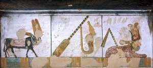
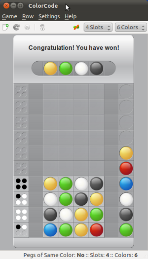

Previous Chapter: Example for recursive Programming: Towers of Hanoi
Next Chapter: Creating dynamic websites with WSGI
Next Chapter: Creating dynamic websites with WSGI
Mastermind / Bulls and Cows
Introduction
 In this chapter of our advanced Python topics we present an implementation of the game Bulls and Cows. This game, which is also known as "Cows and Bulls" or "Pigs and Bulls", is an old code-breaking game played by two players. The game goes back to the 19th century and can be played with paper and pencil. Bulls and Cows -- also known as Cows and Bulls or Pigs and Bulls or Bulls and Cleots -- was the inspirational source of Mastermind, a game invented in 1970 by Mordecai Meirowitz. The game is played by two players. Mastermind and "Bulls and Cows" are very similar and the underlying idea is essentially the same, but Mastermind is sold in a box with a decoding board and pegs for the coding and the feedback pegs. Mastermind uses colours as the underlying code information, while Bulls and Cows uses digits.Rules of the Game
 Bulls and CowsWe start with the rules of "Bulls and Cows":
It's a pencil and paper game played by two players. The two players write a 4-digit number on a sheet of paper. The digits must be all different, but there is a version, where digits can be used more than once. Each player has to find out the opponent's secret code. To this purpose, the players - in turn - try to guess the opponent's number. The opponent has to score the guess: A "bull" is a digit which is located at the right position. If for example the hidden code is "4 3 2 5" and the guess is "4 3 1 2", then we have the two bulls "4" and "3" in the guess "4 3 1 2". A "Cow" on the other hand is a correct number, which is on the wrong position. The "2" of the previous example is a cow.
The first player to reveal the other's secret number is the winner of the game.
The secret numbers for bulls and cows are usually 4-digit-numbers, but the game can be played with 3 to 6 digit numbers.
There are lots of computer implementations of "Bulls and Cows". The first one was a program called moo, written in PL/I.
Mastermind
Mastermind obeys essentially the same rules as "Bulls and Cows", but colours are used instead of digits. Mastermind is a commercial board game, which is played on a decoding board with a shield on one side hiding a row of four large holes to put in coloured pegs, i.e. the secret code, which has to be found out by the opponent. There are 8 to 12 rows of four holes for the guesses, which are open to the view. Beside of each row, there is a set of four small holes for the black and white score pegs.
The Implementation
The following program is a Python implementation (Python3), which is capable of breaking a colour code of four positions and six colours, but these numbers are scalable. The colour code is not allowed to contain multiple occurrences of colours. We need the function all_colours from the following combinatorics module, which can be saved as combinatorics.py:
import random
def fac(n):
if n == 0:
return 1
else:
return (fac(n-1) * n)
def permutations(items):
n = len(items)
if n==0: yield []
else:
for i in range(len(items)):
for cc in permutations(items[:i]+items[i+1:]):
yield [items[i]]+cc
def k_permutations(items, n):
if n==0: yield []
else:
for i in range(len(items)):
for ss in k_permutations(items, n-1):
if (not items[i] in ss):
yield [items[i]]+ss
def random_permutation(list):
length = len(list);
max = fac(length);
index = random.randrange(0, max)
i = 0
for p in permutations(list):
if i == index:
return p
i += 1
def all_colours(colours, positions):
colours = random_permutation(colours)
for s in k_permutations(colours, positions):
yield(s)
If you want to know more about permutations, you may confer to our chapter about "generators and iterators". The function all_colours is essentially like k_permutations, but it starts the sequence of permutations with a random permutations, because we want to make sure, that the computer starts each new game with a completely new guess.
The colours, which are used for the guesses, are defined in a list assigned to the variable "colours". It's possible to put in different elements into this list, e.g.
colours = ["a","b","c","d","e","f"]or something like the following assignment, which doesn't make a lot of sense in terms of colours:
colours = ["Paris blue", "London green", "Berlin black", "Vienna yellow", "Frankfurt red", "Hamburg brown"]The list "guesses" has to be empty. All the guesses with the scores from the human player will be saved in this list. It might look like this in a game:
[(['pink', 'green', 'blue', 'orange'], (1, 1)), (['pink', 'blue', 'red', 'yellow'], (1, 2)), (['pink', 'orange', 'yellow', 'red'], (0, 2))]We can see, that guesses is a list of tuples. Each tuple contains a list of colours1 and a 2-tuple with the scores from the human player, e.g. (1, 2) with 1 the number of "bulls" or "blacks" in the Mastermind lingo and the 2 is the number of "cows" (or "whites" in the mastermind jargon) in ['pink', 'blue', 'red', 'yellow']
We use the generator all_colours() to create the first guess:
permutation_iterator = all_colours(colours, number_of_positions) current_colour_choices = next(permutation_iterator)
The following while loop presents the guesses to the human player, evaluates the answers and produces a new guess. The while loop ends, if either the number of "black" ("cows") (new_guess[1][0]) is equal to number_of_positions or if new_guess[1][0] == -1, which means that the answers were inconsistent.
We have a closer look at the function new_evaluation. At first, it calls the the function get_evaluation() which returns the "bulls" and "cows" or terms of our program the values for rightly_positioned and permutated.
def get_evaluation():
""" asks the human player for an evaluation """
show_current_guess(new_guess[0])
rightly_positioned = int(input("Blacks: "))
permutated = int(input("Whites: "))
return (rightly_positioned, permutated)
The game is over, if the number of rightly positioned colours, as returned by the function get_evaluation(), is equal to the number_of_positions, i.e. 4:
if rightly_positioned == number_of_positions:
return(current_colour_choices, (rightly_positioned, permutated))
In the next if statement, we check, if the human answer makes sense.
There are combinations of whites and blacks, which don't make sense,
for example three blacks and one white don't make sense, as you can easily
understand. The function answer_correct() is used to check, if the input makes sense:
def answer_ok(a):
(rightly_positioned, permutated) = a
if (rightly_positioned + permutated > number_of_positions) \
or (rightly_positioned + permutated < len(colours) - number_of_positions):
return False
if rightly_positioned == 3 and permutated == 1:
return False
return True
The function answer_ok() should be self-explanatory. If answer_ok returns False,
new_evaluation will be left with the return value -1 for the blacks, which in
turn will end the while loop in the main program:
if not answer_ok((rightly_positioned, permutated)):
print("Input Error: Sorry, the input makes no sense")
return(current_colour_choices, (-1, permutated))
If the check was True, the guess will be appended to the previous guesses and
will be shown to the user:
guesses.append((current_colour_choices, (rightly_positioned, permutated))) view_guesses()After this steps, a new guess will be created. If a new guess could be created, it will be shown, together with the black and white values from the previous guess, which are checked in the while loop. If a new guess can not be created, a -1 will be returned for the blacks:
current_colour_choices = create_new_guess()
if not current_colour_choices:
return(current_colour_choices, (-1, permutated))
return(current_colour_choices, (rightly_positioned, permutated))
The following code is the complete program, which you can save and start, but don't forget to use Python3:
import random
from combinatorics import all_colours
def inconsistent(p, guesses):
""" the function checks, if a permutation p, i.e. a list of
colours like p = ['pink', 'yellow', 'green', 'red'] is consistent
with the previous colours. Each previous colour permuation guess[0]
compared (check()) with p has to return the same amount of blacks
(rightly positioned colours) and whites (right colour at wrong
position) as the corresponding evaluation (guess[1] in the
list guesses) """
for guess in guesses:
res = check(guess[0], p)
(rightly_positioned, permutated) = guess[1]
if res != [rightly_positioned, permutated]:
return True # inconsistent
return False # i.e. consistent
def answer_ok(a):
""" checking of an evaulation given by the human player makes
sense. 3 blacks and 1 white make no sense for example. """
(rightly_positioned, permutated) = a
if (rightly_positioned + permutated > number_of_positions) \
or (rightly_positioned + permutated < len(colours) - number_of_positions):
return False
if rightly_positioned == 3 and permutated == 1:
return False
return True
def get_evaluation():
""" asks the human player for an evaluation """
show_current_guess(new_guess[0])
rightly_positioned = int(input("Blacks: "))
permutated = int(input("Whites: "))
return (rightly_positioned, permutated)
def new_evaluation(current_colour_choices):
""" This funtion gets an evaluation of the current guess, checks
the consistency of this evaluation, adds the guess together with
the evaluation to the list of guesses, shows the previous guesses
and creates a new guess """
rightly_positioned, permutated = get_evaluation()
if rightly_positioned == number_of_positions:
return(current_colour_choices, (rightly_positioned, permutated))
if not answer_ok((rightly_positioned, permutated)):
print("Input Error: Sorry, the input makes no sense")
return(current_colour_choices, (-1, permutated))
guesses.append((current_colour_choices, (rightly_positioned, permutated)))
view_guesses()
current_colour_choices = create_new_guess()
if not current_colour_choices:
return(current_colour_choices, (-1, permutated))
return(current_colour_choices, (rightly_positioned, permutated))
def check(p1, p2):
""" check() calcualtes the number of bulls (blacks) and cows (whites)
of two permutations """
blacks = 0
whites = 0
for i in range(len(p1)):
if p1[i] == p2[i]:
blacks += 1
else:
if p1[i] in p2:
whites += 1
return [blacks, whites]
def create_new_guess():
""" a new guess is created, which is consistent to the
previous guesses """
next_choice = next(permutation_iterator)
while inconsistent(next_choice, guesses):
try:
next_choice = next(permutation_iterator)
except StopIteration:
print("Error: Your answers were inconsistent!")
return ()
return next_choice
def show_current_guess(new_guess):
""" The current guess is printed to stdout """
print("New Guess: ",end=" ")
for c in new_guess:
print(c, end=" ")
print()
def view_guesses():
""" The list of all guesses with the corresponding evaluations
is printed """
print("Previous Guesses:")
for guess in guesses:
guessed_colours = guess[0]
for c in guessed_colours:
print(c, end=" ")
for i in guess[1]:
print(" %i " % i, end=" ")
print()
if __name__ == "__main__":
colours = ["red","green","blue","yellow","orange","pink"]
guesses = []
number_of_positions = 4
permutation_iterator = all_colours(colours, number_of_positions)
current_colour_choices = next(permutation_iterator)
new_guess = (current_colour_choices, (0,0) )
while (new_guess[1][0] == -1) or (new_guess[1][0] != number_of_positions):
new_guess = new_evaluation(new_guess[0])
Gui for Mastermind
You can find an implementation of the previous program with a graphical user interface using Tkinter in our Tkinter Tutorial.Footnotes:
1 The colour guesses don't have to be lists, we could have used tuples to represent the colours guesses as well.